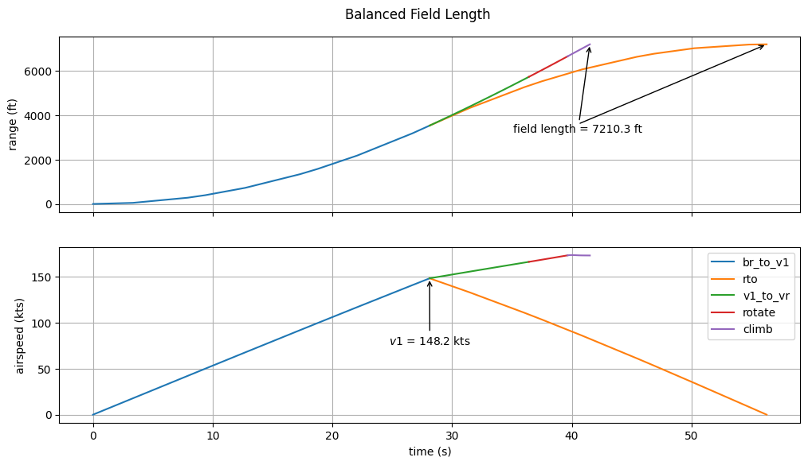

Balanced Field Length using OpenMDAO’s Function Wrapping Components.#
Things you’ll learn through this example
How to build an ODE that uses existing functions rather than rewriting the dynamics as OpenMDAO components.
This example performs the same balanced field length optimization as the example found here. The purpose of this example is to demonstrate the ability of OpenMDAO to wrap existing user-defined functions that was introduced with OpenMDAO 3.14.0.
Why use the function wrapping capability?#
In many cases, users are likely to have existing code that performs their calculations. Rather than forcing them to rewrite this code in the form of OpenMDAO components, the function wrapping components make it easier to get models up and running in OpenMDAO.
Also, doing so gives users another option for differentiating their models by providing a format that can be used by Google’s jax package, which is a python-based automatic differentiation (AD) tool that provides another option, in addition to complex-step, for providing derivatives across the user’s model.
In our case, we have two functions to wrap: the runway ODE and the climb ODE.
Runway ODE function#
def runway_ode(rho, S, CD0, CL0, CL_max, alpha_max, h_w, AR, e, span, T, mu_r, m, v, h, alpha):
g = 9.80665
W = m * g
v_stall = np.sqrt(2 * W / rho / S / CL_max)
v_over_v_stall = v / v_stall
CL = CL0 + (alpha / alpha_max) * (CL_max - CL0)
K_nom = 1.0 / (np.pi * AR * e)
b = span / 2.0
fact = ((h + h_w) / b) ** 1.5
K = K_nom * 33 * fact / (1.0 + 33 * fact)
q = 0.5 * rho * v ** 2
L = q * S * CL
D = q * S * (CD0 + K * CL ** 2)
# Compute the downward force on the landing gear
calpha = np.cos(alpha)
salpha = np.sin(alpha)
# Runway normal force
F_r = m * g - L * calpha - T * salpha
# Compute the dynamics
v_dot = (T * calpha - D - F_r * mu_r) / m
r_dot = v
return CL, q, L, D, K, F_r, v_dot, r_dot, W, v_stall, v_over_v_stall
Climb ODE function#
def climb_ode(rho, S, CD0, CL0, CL_max, alpha_max, h_w, AR, e, span, T, m, v, h, alpha, gam):
g = 9.80665
W = m * g
v_stall = np.sqrt(2 * W / rho / S / CL_max)
v_over_v_stall = v / v_stall
CL = CL0 + (alpha / alpha_max) * (CL_max - CL0)
K_nom = 1.0 / (np.pi * AR * e)
b = span / 2.0
fact = ((h + h_w) / b) ** 1.5
K = K_nom * 33 * fact / (1.0 + 33 * fact)
q = 0.5 * rho * v ** 2
L = q * S * CL
D = q * S * (CD0 + K * CL ** 2)
# Compute the downward force on the landing gear
calpha = np.cos(alpha)
salpha = np.sin(alpha)
# Runway normal force
F_r = m * g - L * calpha - T * salpha
# Compute the dynamics
cgam = np.cos(gam)
sgam = np.sin(gam)
v_dot = (T * calpha - D) / m - g * sgam
gam_dot = (T * salpha + L) / (m * v) - (g / v) * cgam
h_dot = v * sgam
r_dot = v * cgam
return CL, q, L, D, K, F_r, v_dot, r_dot, W, v_stall, v_over_v_stall, gam_dot, h_dot
A component creating function#
This function accepts num_nodes and returns a component that wraps the above functions.
import openmdao.api as om
import openmdao.func_api as omf
def wrap_ode_func(num_nodes, flight_mode, grad_method='jax', jax_jit=True):
"""
Returns the metadata from omf needed to create a new ExplciitFuncComp.
"""
nn = num_nodes
ode_func = runway_ode if flight_mode == 'runway' else climb_ode
meta = (omf.wrap(ode_func)
.add_input('rho', val=1.225, desc='atmospheric density at runway', units='kg/m**3')
.add_input('S', val=124.7, desc='aerodynamic reference area', units='m**2')
.add_input('CD0', val=0.03, desc='zero-lift drag coefficient', units=None)
.add_input('CL0', val=0.5, desc='zero-alpha lift coefficient', units=None)
.add_input('CL_max', val=2.0, desc='maximum lift coefficient for linear fit', units=None)
.add_input('alpha_max', val=np.radians(10), desc='angle of attack at CL_max', units='rad')
.add_input('h_w', val=1.0, desc='height of the wing above the CG', units='m')
.add_input('AR', val=9.45, desc='wing aspect ratio', units=None)
.add_input('e', val=0.801, desc='Oswald span efficiency factor', units=None)
.add_input('span', val=35.7, desc='Wingspan', units='m')
.add_input('T', val=1.0, desc='thrust', units='N')
# Dynamic inputs (can assume a different value at every node)
.add_input('m', shape=(nn,), desc='aircraft mass', units='kg')
.add_input('v', shape=(nn,), desc='aircraft true airspeed', units='m/s')
.add_input('h', shape=(nn,), desc='altitude', units='m')
.add_input('alpha', shape=(nn,), desc='angle of attack', units='rad')
# Outputs
.add_output('CL', shape=(nn,), desc='lift coefficient', units=None)
.add_output('q', shape=(nn,), desc='dynamic pressure', units='Pa')
.add_output('L', shape=(nn,), desc='lift force', units='N')
.add_output('D', shape=(nn,), desc='drag force', units='N')
.add_output('K', val=np.ones(nn), desc='drag-due-to-lift factor', units=None)
.add_output('F_r', shape=(nn,), desc='runway normal force', units='N')
.add_output('v_dot', shape=(nn,), desc='rate of change of speed', units='m/s**2',
tags=['dymos.state_rate_source:v'])
.add_output('r_dot', shape=(nn,), desc='rate of change of range', units='m/s',
tags=['dymos.state_rate_source:r'])
.add_output('W', shape=(nn,), desc='aircraft weight', units='N')
.add_output('v_stall', shape=(nn,), desc='stall speed', units='m/s')
.add_output('v_over_v_stall', shape=(nn,), desc='stall speed ratio', units=None)
)
if flight_mode == 'runway':
meta.add_input('mu_r', val=0.05, desc='runway friction coefficient', units=None)
else:
meta.add_input('gam', shape=(nn,), desc='flight path angle', units='rad')
meta.add_output('gam_dot', shape=(nn,), desc='rate of change of flight path angle',
units='rad/s', tags=['dymos.state_rate_source:gam'])
meta.add_output('h_dot', shape=(nn,), desc='rate of change of altitude', units='m/s',
tags=['dymos.state_rate_source:h'])
meta.declare_coloring('*', method=grad_method)
meta.declare_partials(of='*', wrt='*', method=grad_method)
return om.ExplicitFuncComp(meta, use_jax=grad_method == 'jax', use_jit=jax_jit)
The Function Wrapping Component#
The following component wraps one of the above ODE functions depending on its ‘mode’. This allows us to declare a single ODE component for use in the problem regardless of whether the given phase models the ground roll or the climb.
Building and running the problem#
This code is identical to that in the previous balanced field example.
import matplotlib.pyplot as plt
import numpy as np
import openmdao.api as om
from openmdao.utils.general_utils import set_pyoptsparse_opt
import dymos as dm
p = om.Problem()
_, optimizer = set_pyoptsparse_opt('IPOPT', fallback=True)
p.driver = om.pyOptSparseDriver()
p.driver.declare_coloring()
# Use IPOPT if available, with fallback to SLSQP
p.driver.options['optimizer'] = optimizer
p.driver.options['print_results'] = False
if optimizer == 'IPOPT':
p.driver.opt_settings['print_level'] = 0
p.driver.opt_settings['mu_strategy'] = 'adaptive'
p.driver.opt_settings['bound_mult_init_method'] = 'mu-based'
p.driver.opt_settings['mu_init'] = 0.01
p.driver.opt_settings['nlp_scaling_method'] = 'gradient-based'
# First Phase: Brake release to V1 - both engines operable
br_to_v1 = dm.Phase(ode_class=wrap_ode_func, transcription=dm.Radau(num_segments=3),
ode_init_kwargs={'flight_mode': 'runway'})
br_to_v1.set_time_options(fix_initial=True, duration_bounds=(1, 1000), duration_ref=10.0)
br_to_v1.add_state('r', fix_initial=True, lower=0, ref=1000.0, defect_ref=1000.0)
br_to_v1.add_state('v', fix_initial=True, lower=0, ref=100.0, defect_ref=100.0)
br_to_v1.add_parameter('alpha', val=0.0, opt=False, units='deg')
br_to_v1.add_timeseries_output('*')
# Second Phase: Rejected takeoff at V1 - no engines operable
rto = dm.Phase(ode_class=wrap_ode_func, transcription=dm.Radau(num_segments=3),
ode_init_kwargs={'flight_mode': 'runway'})
rto.set_time_options(fix_initial=False, duration_bounds=(1, 1000), duration_ref=1.0)
rto.add_state('r', fix_initial=False, lower=0, ref=1000.0, defect_ref=1000.0)
rto.add_state('v', fix_initial=False, lower=0, ref=100.0, defect_ref=100.0)
rto.add_parameter('alpha', val=0.0, opt=False, units='deg')
rto.add_timeseries_output('*')
# Third Phase: V1 to Vr - single engine operable
v1_to_vr = dm.Phase(ode_class=wrap_ode_func, transcription=dm.Radau(num_segments=3),
ode_init_kwargs={'flight_mode': 'runway'})
v1_to_vr.set_time_options(fix_initial=False, duration_bounds=(1, 1000), duration_ref=1.0)
v1_to_vr.add_state('r', fix_initial=False, lower=0, ref=1000.0, defect_ref=1000.0)
v1_to_vr.add_state('v', fix_initial=False, lower=0, ref=100.0, defect_ref=100.0)
v1_to_vr.add_parameter('alpha', val=0.0, opt=False, units='deg')
v1_to_vr.add_timeseries_output('*')
# Fourth Phase: Rotate - single engine operable
rotate = dm.Phase(ode_class=wrap_ode_func, transcription=dm.Radau(num_segments=3),
ode_init_kwargs={'flight_mode': 'runway'})
rotate.set_time_options(fix_initial=False, duration_bounds=(1.0, 5), duration_ref=1.0)
rotate.add_state('r', fix_initial=False, lower=0, ref=1000.0, defect_ref=1000.0)
rotate.add_state('v', fix_initial=False, lower=0, ref=100.0, defect_ref=100.0)
rotate.add_control('alpha', order=1, opt=True, units='deg', lower=0, upper=10,
ref=10,
val=[0, 10], control_type='polynomial')
rotate.add_timeseries_output('*')
# Fifth Phase: Climb to target speed and altitude at end of runway.
climb = dm.Phase(ode_class=wrap_ode_func, transcription=dm.Radau(num_segments=5),
ode_init_kwargs={'flight_mode': 'climb'})
climb.set_time_options(fix_initial=False, duration_bounds=(1, 100), duration_ref=1.0)
climb.add_state('r', fix_initial=False, lower=0, ref=1000.0, defect_ref=1000.0)
climb.add_state('h', fix_initial=True, lower=0, ref=1.0, defect_ref=1.0)
climb.add_state('v', fix_initial=False, lower=0, ref=100.0, defect_ref=100.0)
climb.add_state('gam', fix_initial=True, lower=0, ref=0.05, defect_ref=0.05)
climb.add_control('alpha', opt=True, units='deg', lower=-10, upper=15, ref=10)
climb.add_timeseries_output('*')
# Instantiate the trajectory and add phases
traj = dm.Trajectory()
p.model.add_subsystem('traj', traj)
traj.add_phase('br_to_v1', br_to_v1)
traj.add_phase('rto', rto)
traj.add_phase('v1_to_vr', v1_to_vr)
traj.add_phase('rotate', rotate)
traj.add_phase('climb', climb)
all_phases = ['br_to_v1', 'v1_to_vr', 'rto', 'rotate', 'climb']
groundroll_phases = ['br_to_v1', 'v1_to_vr', 'rto', 'rotate']
# Add parameters common to multiple phases to the trajectory
traj.add_parameter('m', val=174200., opt=False, units='lbm',
desc='aircraft mass',
targets={phase: ['m'] for phase in all_phases})
# Handle parameters which change from phase to phase.
traj.add_parameter('T_nominal', val=27000 * 2, opt=False, units='lbf', static_target=True,
desc='nominal aircraft thrust',
targets={'br_to_v1': ['T']})
traj.add_parameter('T_engine_out', val=27000, opt=False, units='lbf', static_target=True,
desc='thrust under a single engine',
targets={'v1_to_vr': ['T'], 'rotate': ['T'], 'climb': ['T']})
traj.add_parameter('T_shutdown', val=0.0, opt=False, units='lbf', static_target=True,
desc='thrust when engines are shut down for rejected takeoff',
targets={'rto': ['T']})
traj.add_parameter('mu_r_nominal', val=0.03, opt=False, units=None, static_target=True,
desc='nominal runway friction coefficient',
targets={'br_to_v1': ['mu_r'], 'v1_to_vr': ['mu_r'], 'rotate': ['mu_r']})
traj.add_parameter('mu_r_braking', val=0.3, opt=False, units=None, static_target=True,
desc='runway friction coefficient under braking',
targets={'rto': ['mu_r']})
traj.add_parameter('h_runway', val=0., opt=False, units='ft',
desc='runway altitude',
targets={phase: ['h'] for phase in groundroll_phases})
# Here we're omitting some constants that are common throughout all phases for the sake of brevity.
# Their correct defaults are specified in add_input calls to `wrap_ode_func`.
# Standard "end of first phase to beginning of second phase" linkages
# Alpha changes from being a parameter in v1_to_vr to a polynomial control
# in rotate, to a dynamic control in `climb`.
traj.link_phases(['br_to_v1', 'v1_to_vr'], vars=['time', 'r', 'v'])
traj.link_phases(['v1_to_vr', 'rotate'], vars=['time', 'r', 'v', 'alpha'])
traj.link_phases(['rotate', 'climb'], vars=['time', 'r', 'v', 'alpha'])
traj.link_phases(['br_to_v1', 'rto'], vars=['time', 'r', 'v'])
# Less common "final value of r must match at ends of two phases".
traj.add_linkage_constraint(phase_a='rto', var_a='r', loc_a='final',
phase_b='climb', var_b='r', loc_b='final',
ref=1000)
# Define the constraints and objective for the optimal control problem
v1_to_vr.add_boundary_constraint('v_over_v_stall', loc='final', lower=1.2, ref=100)
rto.add_boundary_constraint('v', loc='final', equals=0., ref=100, linear=True)
rotate.add_boundary_constraint('F_r', loc='final', equals=0, ref=100000)
climb.add_boundary_constraint('h', loc='final', equals=35, ref=35, units='ft', linear=True)
climb.add_boundary_constraint('gam', loc='final', equals=5, ref=5, units='deg', linear=True)
climb.add_path_constraint('gam', lower=0, upper=5, ref=5, units='deg')
climb.add_boundary_constraint('v_over_v_stall', loc='final', lower=1.25, ref=1.25)
rto.add_objective('r', loc='final', ref=1000.0)
#
# Setup the problem and set the initial guess
#
p.setup(check=True)
br_to_v1.set_time_val(initial=0.0, duration=35.0)
br_to_v1.set_state_val('r', [0, 2500.0])
br_to_v1.set_state_val('v', [0.0001, 100.0])
br_to_v1.set_parameter_val('alpha', 0.0, units='deg')
v1_to_vr.set_time_val(initial=35.0, duration=35.0)
v1_to_vr.set_state_val('r', [2500, 300.0])
v1_to_vr.set_state_val('v', [100, 110.0])
v1_to_vr.set_parameter_val('alpha', 0.0, units='deg')
rto.set_time_val(initial=35.0, duration=1.0)
rto.set_state_val('r', [2500, 5000.0])
rto.set_state_val('v', [110, 0.0001])
rto.set_parameter_val('alpha', 0.0, units='deg')
rotate.set_time_val(initial=35.0, duration=5.0)
rotate.set_state_val('r', [1750, 1800.0])
rotate.set_state_val('v', [80, 85.0])
rotate.set_control_val('alpha', 0.0, units='deg')
climb.set_time_val(initial=30.0, duration=20.0)
climb.set_state_val('r', [5000, 5500.0], units='ft')
climb.set_state_val('v', [160, 170.0], units='kn')
climb.set_state_val('h', [0.0, 35.0], units='ft')
climb.set_state_val('gam', [0.0, 5.0], units='deg')
climb.set_control_val('alpha', 5.0, units='deg')
dm.run_problem(p, run_driver=True, simulate=True)
print(p.get_val('traj.rto.states:r')[-1])
--- Constraint Report [traj] ---
--- br_to_v1 ---
None
--- rto ---
[final] 0.0000e+00 == v [m/s]
--- v1_to_vr ---
[final] 1.2000e+00 <= v_over_v_stall [None]
--- rotate ---
[final] 0.0000e+00 == F_r [N]
--- climb ---
[final] 3.5000e+01 == h [ft]
[final] 5.0000e+00 == gam [deg]
[final] 1.2500e+00 <= v_over_v_stall [None]
[path] 0.0000e+00 <= gam <= 5.0000e+00 [deg]
INFO: checking out_of_order
INFO: checking system
INFO: checking solvers
INFO: checking dup_inputs
INFO: checking missing_recorders
WARNING: The Problem has no recorder of any kind attached
INFO: checking unserializable_options
INFO: checking comp_has_no_outputs
INFO: checking auto_ivc_warnings
/usr/share/miniconda/envs/test/lib/python3.11/site-packages/openmdao/recorders/sqlite_recorder.py:226: UserWarning:The existing case recorder file, dymos_solution.db, is being overwritten.
Model viewer data has already been recorded for Driver.
INFO: checking out_of_order
INFO: checking system
INFO: checking solvers
INFO: checking dup_inputs
INFO: checking missing_recorders
WARNING: The Problem has no recorder of any kind attached
INFO: checking unserializable_options
INFO: checking comp_has_no_outputs
INFO: checking auto_ivc_warnings
/usr/share/miniconda/envs/test/lib/python3.11/site-packages/openmdao/core/system.py:1648: DerivativesWarning:'traj.phases.br_to_v1.rhs_all' <class ExplicitFuncComp>: No partials found but coloring was requested. Declaring ALL partials as dense (method='jax')
Coloring for 'traj.phases.br_to_v1.rhs_all' (class ExplicitFuncComp)
Jacobian shape: (132, 60) (10.13% nonzero)
FWD solves: 16 REV solves: 0
Total colors vs. total size: 16 vs 60 (73.33% improvement)
Sparsity computed using tolerance: 1e-25
Time to compute sparsity: 0.2722 sec
Time to compute coloring: 0.0106 sec
Memory to compute coloring: 0.1250 MB
/usr/share/miniconda/envs/test/lib/python3.11/site-packages/openmdao/core/system.py:1648: DerivativesWarning:'traj.phases.rto.rhs_all' <class ExplicitFuncComp>: No partials found but coloring was requested. Declaring ALL partials as dense (method='jax')
Coloring for 'traj.phases.rto.rhs_all' (class ExplicitFuncComp)
Jacobian shape: (132, 60) (10.13% nonzero)
FWD solves: 16 REV solves: 0
Total colors vs. total size: 16 vs 60 (73.33% improvement)
Sparsity computed using tolerance: 1e-25
Time to compute sparsity: 0.2350 sec
Time to compute coloring: 0.0105 sec
Memory to compute coloring: 0.0000 MB
/usr/share/miniconda/envs/test/lib/python3.11/site-packages/openmdao/core/system.py:1648: DerivativesWarning:'traj.phases.v1_to_vr.rhs_all' <class ExplicitFuncComp>: No partials found but coloring was requested. Declaring ALL partials as dense (method='jax')
Coloring for 'traj.phases.v1_to_vr.rhs_all' (class ExplicitFuncComp)
Jacobian shape: (132, 60) (10.15% nonzero)
FWD solves: 16 REV solves: 0
Total colors vs. total size: 16 vs 60 (73.33% improvement)
Sparsity computed using tolerance: 1e-25
Time to compute sparsity: 0.2350 sec
Time to compute coloring: 0.0105 sec
Memory to compute coloring: 0.0000 MB
/usr/share/miniconda/envs/test/lib/python3.11/site-packages/openmdao/core/system.py:1648: DerivativesWarning:'traj.phases.rotate.rhs_all' <class ExplicitFuncComp>: No partials found but coloring was requested. Declaring ALL partials as dense (method='jax')
Coloring for 'traj.phases.rotate.rhs_all' (class ExplicitFuncComp)
Jacobian shape: (132, 60) (10.15% nonzero)
FWD solves: 16 REV solves: 0
Total colors vs. total size: 16 vs 60 (73.33% improvement)
Sparsity computed using tolerance: 1e-25
Time to compute sparsity: 0.2362 sec
Time to compute coloring: 0.0105 sec
Memory to compute coloring: 0.0000 MB
/usr/share/miniconda/envs/test/lib/python3.11/site-packages/openmdao/core/system.py:1648: DerivativesWarning:'traj.phases.climb.rhs_all' <class ExplicitFuncComp>: No partials found but coloring was requested. Declaring ALL partials as dense (method='jax')
Coloring for 'traj.phases.climb.rhs_all' (class ExplicitFuncComp)
Jacobian shape: (260, 111) (5.54% nonzero)
FWD solves: 16 REV solves: 0
Total colors vs. total size: 16 vs 111 (85.59% improvement)
Sparsity computed using tolerance: 1e-25
Time to compute sparsity: 0.4094 sec
Time to compute coloring: 0.0191 sec
Memory to compute coloring: 0.1250 MB
Full total jacobian for problem 'problem' was computed 3 times, taking 3.25979582399998 seconds.
Total jacobian shape: (178, 166)
Jacobian shape: (178, 166) (3.16% nonzero)
FWD solves: 14 REV solves: 0
Total colors vs. total size: 14 vs 166 (91.57% improvement)
Sparsity computed using tolerance: 1e-25
Time to compute sparsity: 3.2598 sec
Time to compute coloring: 0.0689 sec
Memory to compute coloring: 0.2500 MB
Coloring created on: 2024-06-27 18:26:30
/usr/share/miniconda/envs/test/lib/python3.11/site-packages/openmdao/core/total_jac.py:1635: DerivativesWarning:Constraints or objectives [('traj.phases.climb->path_constraint->gam', inds=[(0, 0)])] cannot be impacted by the design variables of the problem.
/usr/share/miniconda/envs/test/lib/python3.11/site-packages/openmdao/core/group.py:1098: DerivativesWarning:Constraints or objectives [ode_eval.control_interp.control_rates:alpha_rate2] cannot be impacted by the design variables of the problem because no partials were defined for them in their parent component(s).
/usr/share/miniconda/envs/test/lib/python3.11/site-packages/openmdao/core/group.py:1098: DerivativesWarning:Constraints or objectives [ode_eval.control_interp.control_rates:alpha_rate2] cannot be impacted by the design variables of the problem because no partials were defined for them in their parent component(s).
/usr/share/miniconda/envs/test/lib/python3.11/site-packages/openmdao/recorders/sqlite_recorder.py:226: UserWarning:The existing case recorder file, dymos_simulation.db, is being overwritten.
Simulating trajectory traj
Model viewer data has already been recorded for Driver.
Done simulating trajectory traj
[2197.7135635]
sim_case = om.CaseReader('dymos_solution.db').get_case('final')
fig, axes = plt.subplots(2, 1, sharex=True, gridspec_kw={'top': 0.92}, figsize=(12, 6))
for phase in ['br_to_v1', 'rto', 'v1_to_vr', 'rotate', 'climb']:
r = sim_case.get_val(f'traj.{phase}.timeseries.r', units='ft')
v = sim_case.get_val(f'traj.{phase}.timeseries.v', units='kn')
t = sim_case.get_val(f'traj.{phase}.timeseries.time', units='s')
axes[0].plot(t, r, '-', label=phase)
axes[1].plot(t, v, '-', label=phase)
fig.suptitle('Balanced Field Length')
axes[1].set_xlabel('time (s)')
axes[0].set_ylabel('range (ft)')
axes[1].set_ylabel('airspeed (kts)')
axes[0].grid(True)
axes[1].grid(True)
tv1 = sim_case.get_val('traj.br_to_v1.timeseries.time', units='s')[-1, 0]
v1 = sim_case.get_val('traj.br_to_v1.timeseries.v', units='kn')[-1, 0]
tf_rto = sim_case.get_val('traj.rto.timeseries.time', units='s')[-1, 0]
rf_rto = sim_case.get_val('traj.rto.timeseries.r', units='ft')[-1, 0]
axes[0].annotate(f'field length = {r[-1, 0]:5.1f} ft', xy=(t[-1, 0], r[-1, 0]),
xycoords='data', xytext=(0.7, 0.5),
textcoords='axes fraction', arrowprops=dict(arrowstyle='->'),
horizontalalignment='center', verticalalignment='top')
axes[0].annotate(f'', xy=(tf_rto, rf_rto),
xycoords='data', xytext=(0.7, 0.5),
textcoords='axes fraction', arrowprops=dict(arrowstyle='->'),
horizontalalignment='center', verticalalignment='top')
axes[1].annotate(f'$v1$ = {v1:5.1f} kts', xy=(tv1, v1), xycoords='data', xytext=(0.5, 0.5),
textcoords='axes fraction', arrowprops=dict(arrowstyle='->'),
horizontalalignment='center', verticalalignment='top')
plt.legend()
plt.show()
